此前，我们已经谈到了swift2的新功能，从这个教程开始，我们将含盖iOS9中的一些很酷的新功能。iOS新版本中添加了许多新特新。对于开发者来说，Stack View的介绍值得首提。我知道有些开发者发现使用自动布局来设计复杂的用户界面很困难。Stack views正是为了帮助我们，使开发人员的工作变得更容易。
Stack View提供了一个简化的接口将视图集合布局在任何一列或行。对于嵌入到Stack View的视图，你不再需要定义auto layout约束。Stack View管理其子视图的布局同时为你自动添加auto layout约束。这意味着子视图将能适应不同的屏幕尺寸。此外，您还可以将Stack View嵌入另一个Stack View来构建更复杂的用户界面。不要误会我的意思。这并不意味着你不需要处理的自动布局。你仍然需要定义Stack View布局约束。它只是从为每一个UI元素添加约束节省您的时间，使用户能够轻松地从布局添加/删除视图。
Xcode中7提供了两种方式来使用Stack View。您可以从对象库中拖出一个Stack View（水平/垂直），并把它的拖到storyboard中。然后，您拖放视图对象，如标签，按钮，图像视图到Stack View中。另外，您也可以使用自动布局栏中的Stack选项。对于这种方法，您只需选择两个或多个视图对象，然后单击Stack选项。Interface Builder会将对象嵌入到Stack View中，并自动调整其大小。如果你还没有思绪关于如何使用堆栈视图，不用担心。我们将在本教程中介绍这两个方法。读下去，你就会很快明白我的意思。
我假设你有autolayout的基础。如果没有，请首先阅读有关自动布局的介绍文章。
Demo App
让我们先来看看我们要构建演示程序。在本教程中，我将告诉你如何像这样使用StackView布局一个用户界面：
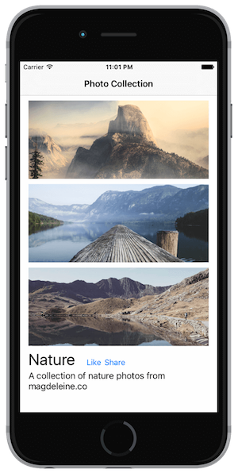
你可以不使用StackView创建相同的UI。但正如你所看到的，StackView改变了你布局界面的方式。有在本教程中没有编码。我们将只专注于使用Interface Builder布局用户界面。
首先，请下载初始项目。您需要使用的Xcode7来构建项目。如果你还没有安装它，请先下载它。项目模板非常简单。它仅预置的导航控制器和图像资源在image asset中。
友情提示：样品照片由magdeleine.co提供。
从对象库中添加Stack Views
启动Xcode 7，打开Main.storyboard。从对象库中，将一个Verticle Stack View对象拖到storyboard视图控制器中。Stack view 可以排列子视图（称为arranged views）在纵向和横向的布局。因为我们要垂直布局中的图像视图，我们选择Verticle堆栈视图对象。
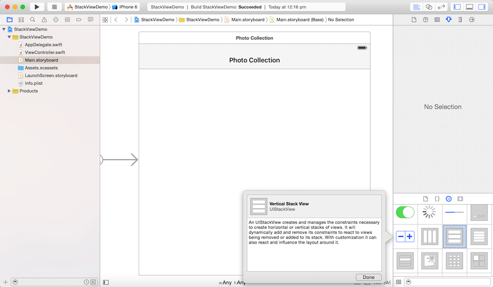
接下来，从对象库中拖一个imageview。当你把imageview拖进stack view，imageview自动调整大小。重复相同的步骤，再增加两个imageview到stack view。这时候神奇发生了。当您添加另一个imageView，stack view自动调整imageView垂直的布局，为你建立必要的约束。酷吧？
为Stack View添加约束
Stack View帮助开发人员添加每个布局对象的约束。话虽这么说，你需要提供堆栈视图的布局约束。对于我们刚才添加的Stack View，我们将添加如下布局约束：
- 设置Stack View的顶部，左侧和右侧间距约束，使得Stack View位于屏幕的顶部。
- 设置Stack View的高度约束，使得Stack View高为父视图高的70％。
现在选择StackView，然后单击布局按钮的Pin按钮。分别设置的顶部，左侧和右侧的约束为10，0和0。然后点击“Add 3 Constraints”按钮来添加约束。
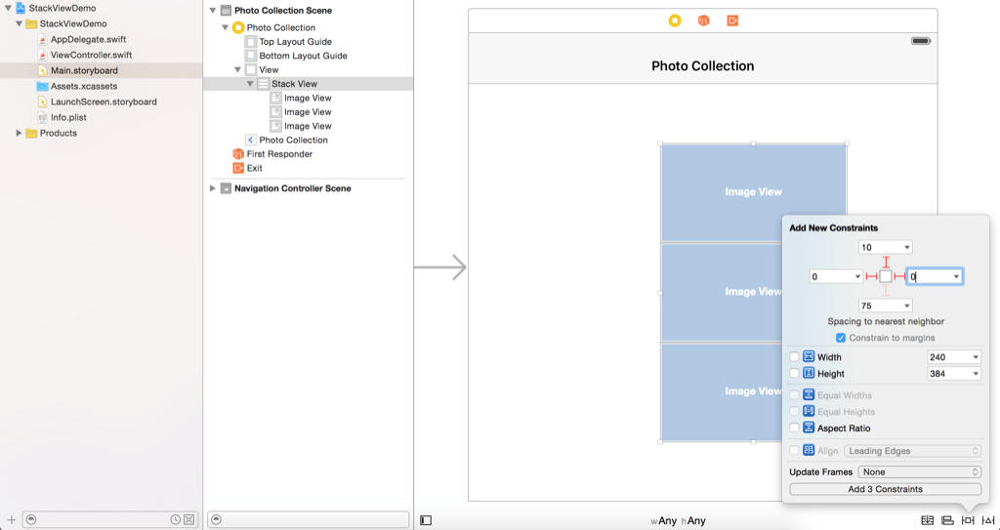
StackView的当前位置不匹配约束。您可以直接点击警告标志（即黄色箭头）在文档大纲修复错位。
要设置高度约束，选择Interface Builder的文档大纲。按住control从StackView拖到View。释放按钮后，选择的高度相等。
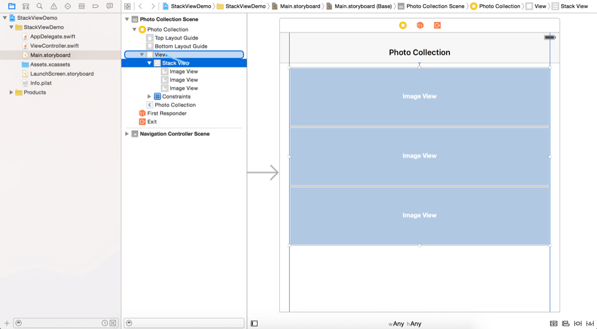
设置以后StackView的高度等于View的高度。然而，StackView应该只占View的高度的70％左右。因此，选择“StackView.height”约束，进入属性检查器。将值从乘数1.0更改为0.7。
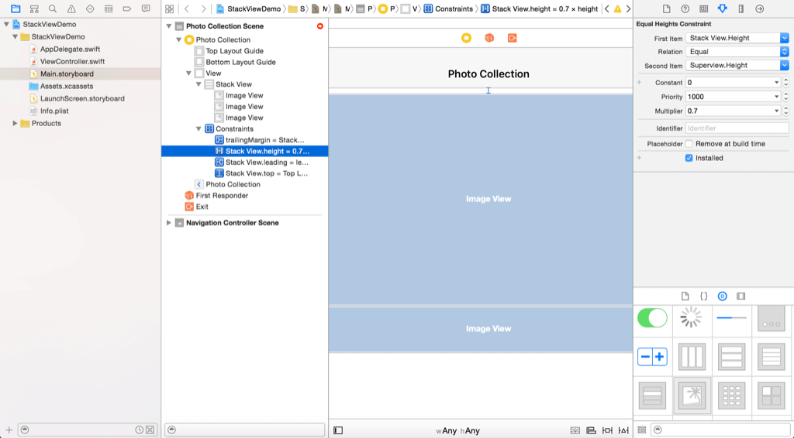
设置Stack Views的属性
StackView看起来并不如预期。一旦你有一个StackView，你可以改变一些堆栈视图的属性来改变它的外观。Axis选项表示所排列的视图是否应该布局垂直或水平。Alignment选项控制视图如何对齐排列。例如，如果它被设置为Leading，StackView对齐其前沿排列其子视图。
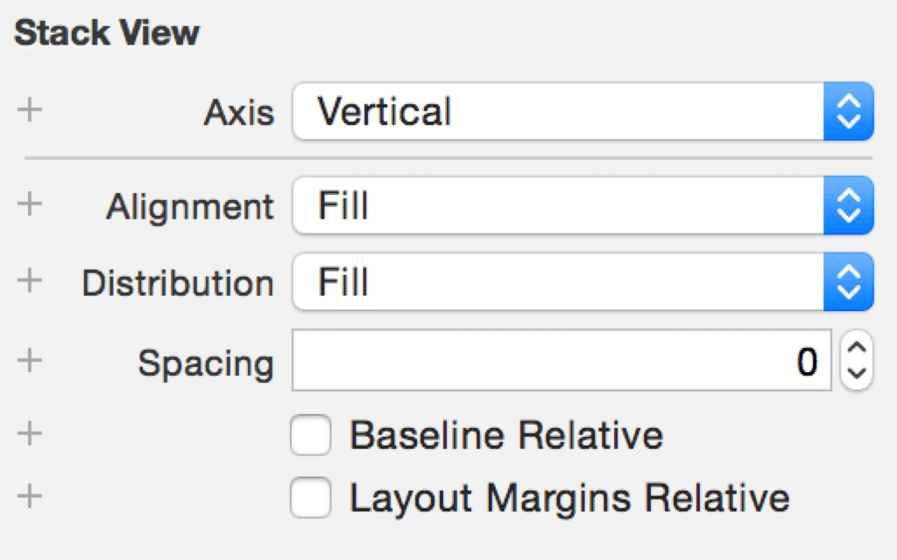
Distribution选项定义排列的视图的大小和位置。缺省情况下，它被设置为Fill。在这种情况下，StackView会尽可能满足其可用空间排列所有子视图。现在，改变这个选项为Fill Equally。StackView会自动调整子视图的排列和大小，子视图相同的大小。
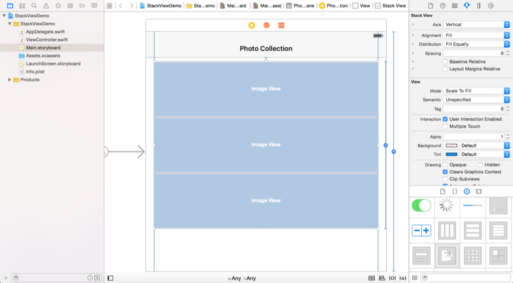
Spacing选项允许你设置视图之间的间距。其值更改为10为image views之间添加额外的间距。
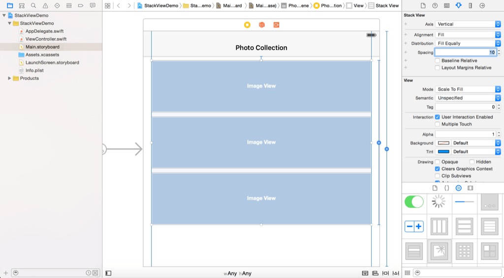
设置图片
接下来，让我们为image views添加相应的图片。选择第一个imageView，然后转到属性检查器。改变image选项“nature-1”和将Mode设置为“Aspect Fill”。同时启用“Clip Subviews”。对其余image views重复相同的步骤操作，设置Image为“nature-2”和“nature-3”。您的布局应该是这样的：
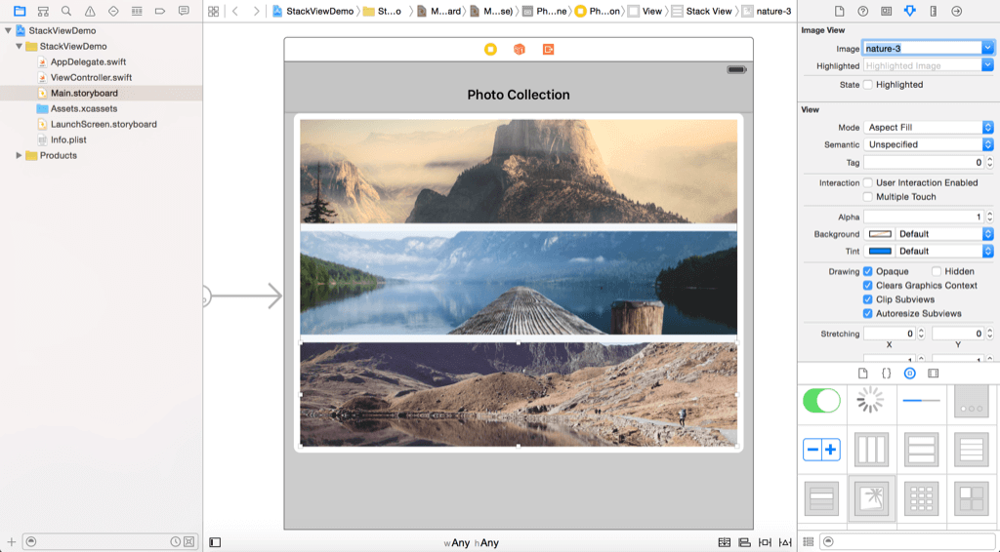
现在，您可以运行该项目有一个快速浏览一下。尝试在不同的模拟器测试项目，用户界面完全适合于各种设备。StackView已为你自动添加布局约束。其实你可以启动视图调试选项（在运行你的应用程序），查看添加image views的布局约束。
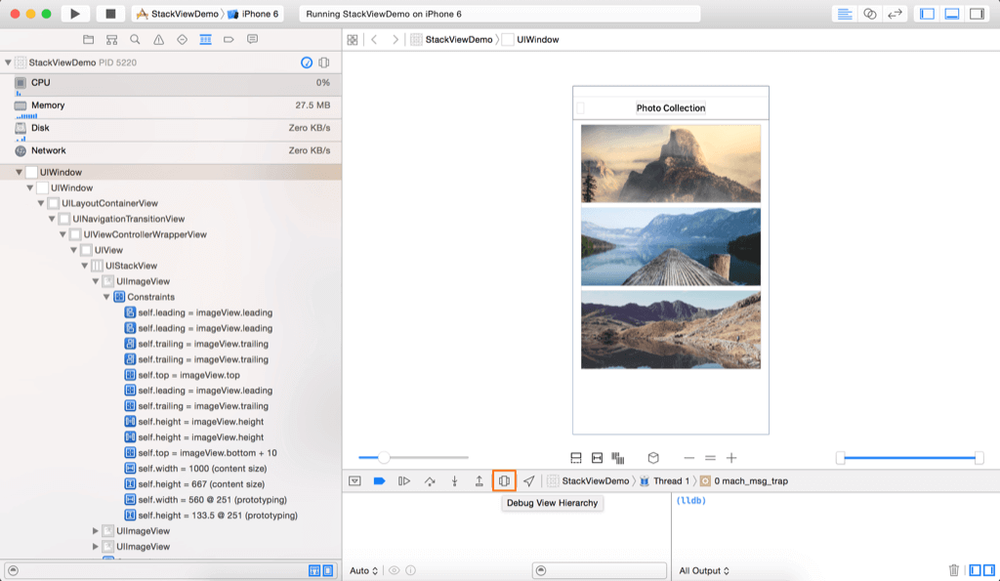
使用嵌套的Stack Views布局Labels和Buttons
我们还没有完成。有几个Label和Button需要添加到用户界面。现在从对象库的视图中拖一个Label。命名为“Nature”将它移动到StackView的右下方。通过改变其字体大小为30使Label大一点。接下来，拖一个Label至视图并命名为“A collection of nature photos from magdeleine.co”。将它放置在Naturelabel下面。
同样，你也不需要为这些Label设置约束。让SackView替你去完成。在本教程的一开始，我提到，有使用SackView有两种方式。此前，从对象库中的添加SackView。现在，我会告诉你另一种方法。
按住Command键来选择这两个Label，然后单击布局栏中的堆栈按钮。Interface Builder自动将这些Label嵌入到垂直SackView。
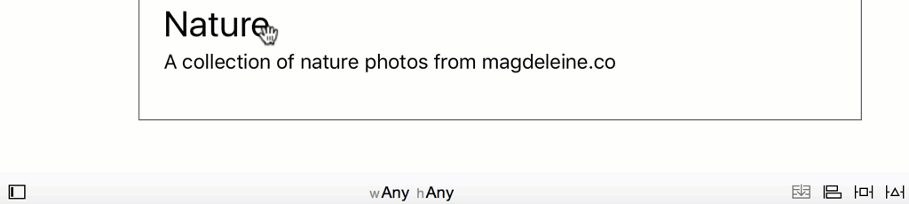
接下来，向这个视图中添加两个button。命名一个为“Like”，另一个为“Share”。同样，我们也不想处理自动布局。因此，选择这两个button，然后单击布局栏中的Stack按钮在水平StackView中嵌入两个按钮。您可以通过设置StackView的间距值为5给按钮之间添加间隔。
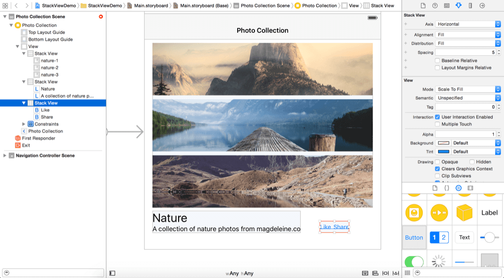
如果你看一下最终的布局，两个Button应该放在 Nature Label旁边。你怎么能做到这一点？StackView优秀的地方是你可以将多个StackView嵌套在一起打造你想要的精确布局。现在拖动含Button的StackView到Nature Label的视图中。一旦你松开按键，StackView将在另一个StackView嵌入。Nature Label和Button，选择这两个视图，使用Stack选项将它们添加到StackView中。默认情况下，新的堆栈视图的轴被设置为垂直。在属性检查器中，将其更改为水平的，使Like和Share Button将位于Nature label右边。
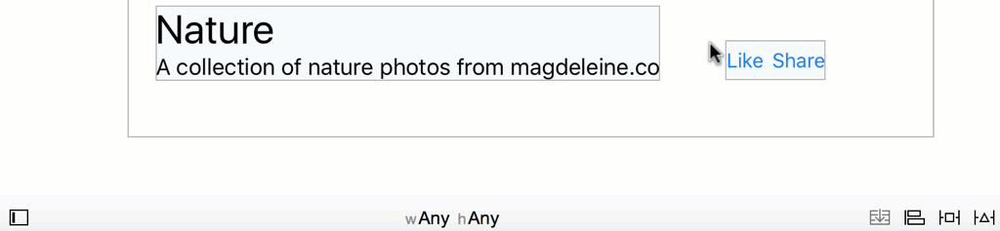
Button还需要与Nature Label的基线对齐。选择StackView的Alignment选项将值由Fill改为First Baseline。另外，改变Spacing选项值为20来增加Nature Label与Button之间间距。
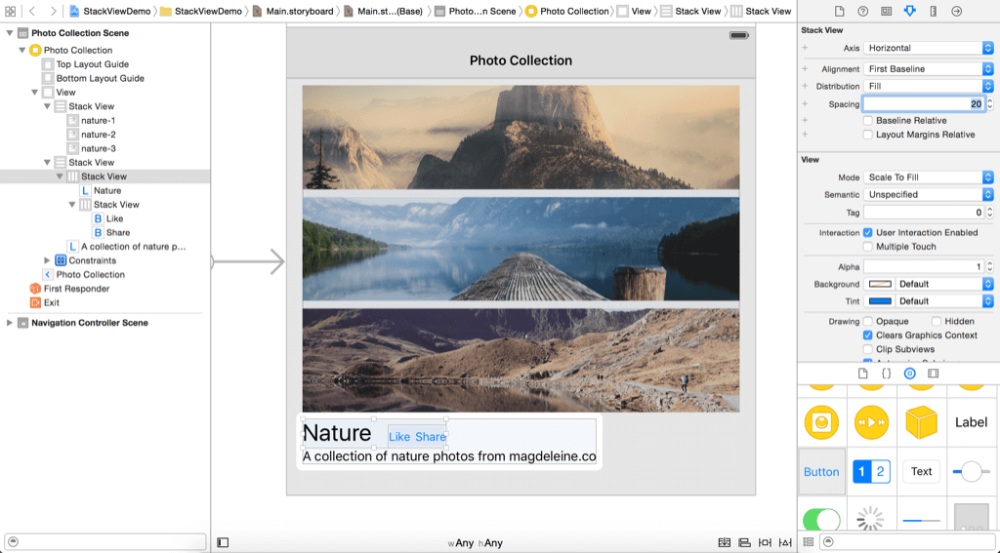
正如你所看到的，我们只需要使用嵌套StackView来构建你期望的精确布局。
最后，我们添加含有imageView的StackView与含有Label和Button的StackView之间的约束，选中这两个StackView然后单击布局按钮的Pin按钮。分别设置顶部，左，右的值为0,8和0。
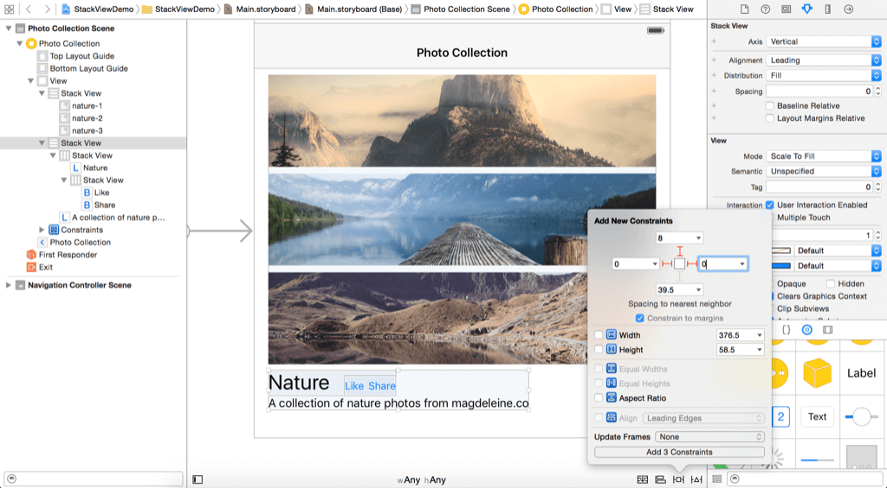
为了确保说明Label自动调整大小，更改Lines选项为0和Line Breaks选项为Word Wrap。好的！您已经完成了UI设计。现在运行项目，看看结果。如果你一切配置正确，您的用户界面应该是这样的：
如果您在横向iPhone上查看布局，用户界面变成这样：
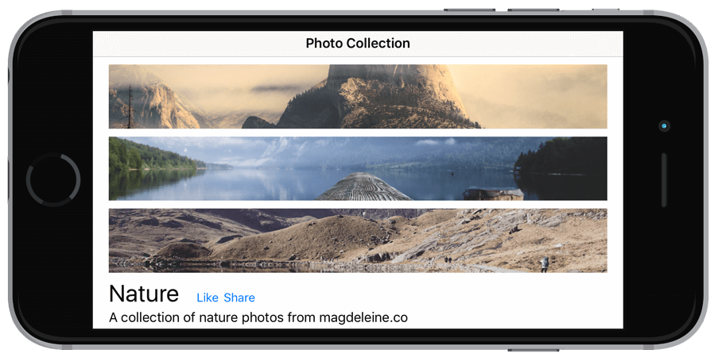
它看起来不错，但是如果能像这样水平的排列是不是更棒？
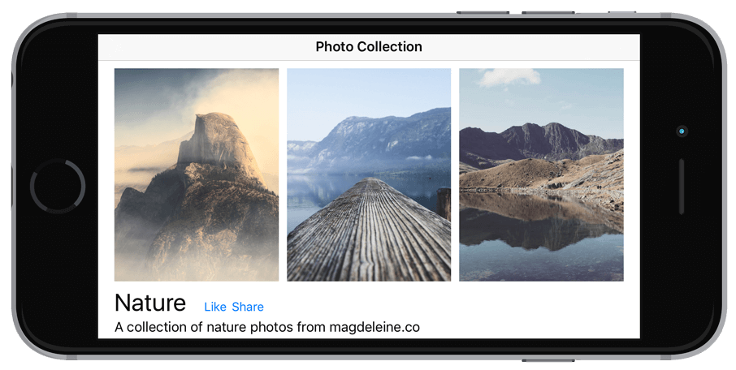
使用Size Classe适配StackView
为iPhone横向实现不同布局，我们必须使StackView具有适应性。在iOS中8，介绍了size classe的概念。下表显示了iOS设备及其相应size class：
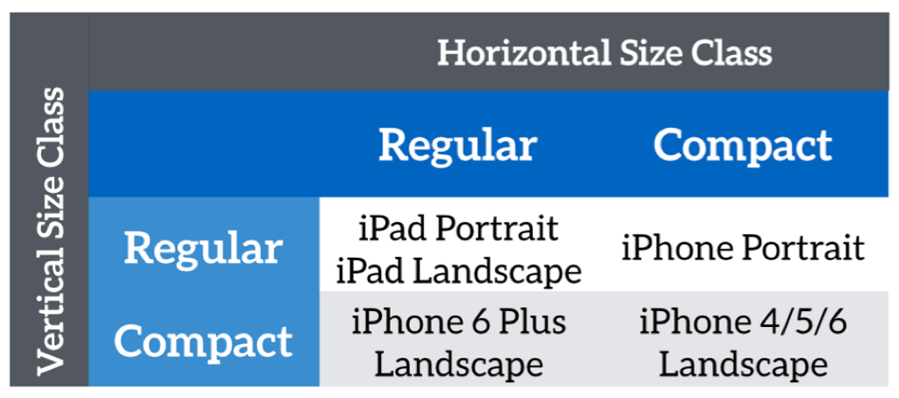
您可以使用size classe提供指定的布局覆盖原有的基础布局中的设计。在这种情况下，我们要为这两个size class将StackView（含有imageView）的Sxis由vertical改为horizontal：
- Compact width-Compact height
- Regular width-Compact height
选中StackVIew并转到属性检查器。点击Axis选项左侧的+按钮。选择Any Width>Compact height，然后设置这个尺寸级别的Axis为Horizontal。any width 包括compact和regular width。
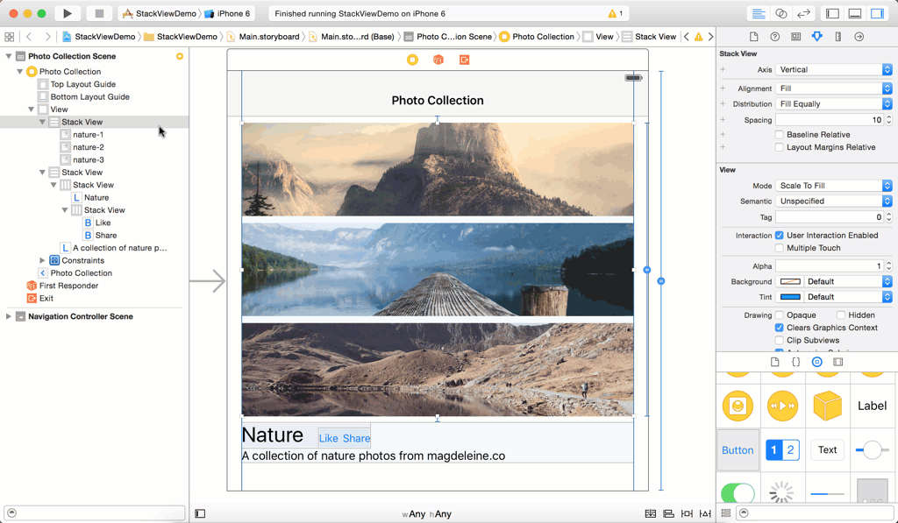
通过这样做，当你的iPhone旋转的时候StackView将水平排列这些imageView。在不同的设备上运行并查看结果。
总结
在本教程中，我已经给你介绍了StackView，并就如何使用这种新的组件布局UI进行了演示。StackView用很少的约束简化你构建在iOS用户界面的方式。你可能有一个问题是，你何时应使用StackView？苹果工程师建议开发人员除了在确实需要约束的时候，其他时候优先采用StackView。开始使用StackView设计您的用户界面！我相信你会爱上它。
作为参考，你可以在这里下载Xcode项目